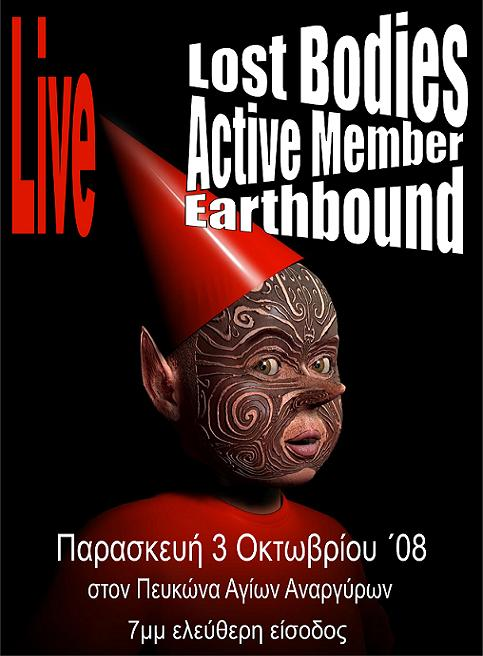

Κέντρο Ψυχικής Υγείας ΑΓΙΩΝ ΑΝΑΡΓΥΡΩΝ
Στις 3 Οκτωβρίου 2008, στις 7μμ, στον Πευκώνα των Αγίων Αναργύρων θα γίνει εκδήλωση-συναυλία με τίτλο:
«Γλιστρώντας πίσω από τη ‘γραμμή των συνόρων’».
Στη συναυλία έχουν προσφερθεί να συμμετάσχουν τα συγκροτήματα:
ACTIVE MEMBER, EARTHBOUND, LOST BODIES.
Αφετηρία για την εκδήλωση ήταν η ιστορία ενός νεαρού μετανάστη “χωρίς χαρτιά”, που ξεκίνησε από το Μπάνγκλαντες και ο οποίος, φτάνοντας, μετά από μια μακρά και περιπετειώδη διαδρομή, στην Ελλάδα, εμφανίζει ένα σοβαρό πρόβλημα ψυχικής υγείας, εξαιτίας του οποίου νοσηλεύεται στο ΨΝΑ. Μετά από μια παρατεταμένη νοσηλεία, μόνος και χωρίς κανένα υποστηρικτικό πλαίσιο, με την επικοινωνία μαζί του (ακόμα και στις συνεντεύξεις με τους θεράποντες) να γίνεται με τα λίγα αγγλικά που μιλούσε, βλέπει ότι το “όνειρο” για μια δουλειά, μέσω της οποίας θα μπορούσε να βοηθήσει την οικογένεια του, γίνεται, πλέον, “άπιαστο” και ζητάει να επιστρέψει στην πατρίδα του.
Το ΨΝΑ καλύπτει τα έξοδα δύο μελών του προσωπικού του για να τον συνοδεύσουν στο μακρινό ταξίδι πίσω στο Μπάνγκλαντες.
Μια ιστορία που μιλάει για εκατοντάδες χιλιάδες και εκατομμύρια παρόμοιες ιστορίες, για τη ζωή στην παγκόσμια “συνοριακή περιοχή”, “χωρίς χαρτιά”, χωρίς δικαιώματα, για το πώς ο ρατσισμός προκαλεί σοβαρά προβλήματα ψυχικής υγείας - με το “όνειρο για την επιβίωση” να καταλήγει, συχνά, όχι μόνο στο βυθό της θάλασσας, αλλά και στο ψυχιατρείο.
Μιλάει, επίσης, για τις τρομερές ελλείψεις σε υπηρεσίες κατάλληλες ν’ “ακούσουν”, να “κατανοήσουν” και ν΄ αντιμετωπίσουν τον “ένα στους δέκα” από τους κατοίκους αυτής της χώρας, σύμφωνα με τη γλώσσα και τον πολιτισμό του οποίου είναι φορέας.
| |
3 σ χ ό λ ι α :
|
Ωωωωω!!!!Τί χαρά να σας δούμε στη γειτονιά!!!
Νομίζω ότι ήρθε η ώρα να πείτε το "πσιτ-φίλε" λάϊβ!!!;) |
|
Oaxaca de Juarez, Oaxaca.
Πέμπτη, 25 Σεπτέμβρη
''Δικαιοσύνη για την αδελφή μας Marcella Sali Grace!
Αδελφοί κι Αδελφές,
οι καρδιές μας είναι γεμάτες θλίψη για τον άγριο βιασμό και τη δολοφονία της αδελφής μας, Σάλι, που έγινε 20 λεπτά μακριά από το San Jose del Pacifico, και για το ότι το Γενικό Γραφείο των Δικηγόρων της Oaxaca δεν έχει κάνει, όπως το συνηθίζει, μέχρι αυτή τη στιγμή τίποτα αναφορικά με το γεγονός ότι υπάρχουν μάρτυρες που έχουν πληροφορίες για την αναγνώριση των ενόχων.
Η Marcella Sali Grace γεννήθηκε στις Η.Π.Α.με μια μεγάλη καρδιά αφοσιωμένη στην αλληλεγγύη όσον αφορά ακριβώς παρόμοιες περιπτώσεις. Είχε πολλούς φίλους γιατί ήταν πάντα πρόθυμη να βοηθήσει χρησιμοποιώντας τα καλλιτεχνικά της χαρίσματα για να ζωγραφίσει ένα μπάνερ ή ένα τοίχο ή να χορέψει αραβικούς χορούς συγκεντρώνοντας χρήματα για τον αγώνα ή δημιουργώντας punk shows ή παραδίδοντας μαθήματα αυτοάμυνας στις γυναίκες, εφόσον γνώριζε πολύ καλά με ποιο τρόπο τους απευθύνονται οι άντρες. Το να είναι οι γυναίκες ελεύθερες και σεβαστές, αυτός ήταν ένας από τους αγώνες που έδινε η Σάλι. Η δέσμευσή της σ΄αυτό τον αγώνα ήταν τόσο μεγάλη ώστε ήταν μια διεθνής συνοδός (βοηθός) αδελφών και αδελφισσών που είχαν κακοποιηθεί από την κακή κυβέρνηση του Ulises Ruiz Ortiz.
Δυστυχώς στις 24 του Σεπτέμβρη βρέθηκε το σώμα μιας γυναίκας με τα φυσικά χαρακτηριστικά της Σάλι σε μια έρημη καλύβα, 20 λεπτά μακριά απ΄το χωριό San Jose del Pacifico, όταν ένας χωρικός που πήγε να ταίσει κάποια σκυλιά στην περιοχή, ένιωσε μια δυσωδία να έρχεται από την καλύβα και ειδοποίησε τις αρχές της κοινότητας, οι οποίες μετακίνησαν το σώμα που ήταν ήδη σε κατάσταση αποσύνθεσης, μη δίνοντας, μετά απ΄αυτό το γεγονός, καμιά άλλη πληροφορία στους κατοίκους του χωριού.
Εχτές, η συντρόφισσα, Julieta Cruz (που γνώριζε ότι η Σάλι είχε πάει στο San Jose del Pacifico), πληροφορήθηκε ότι μια νέα γυναίκα βρίσκονταν στο αμφιθέατρο του Miahuatlan, όπου πήγε και αναγνώρισε το σώμα της Σάλι από το τατού που είχε, εφόσον το πρόσωπό της ήταν αγνώριστο. Η Julieta πιστεύει ότι της έκαψαν το πρόσωπο αλλά αυτό δεν εξηγεί το γιατί αφού το υπόλοιπο σώμα δεν έχει παρόμοιες φθορές. Όταν ζητήσαμε να πληροφορηθούμε τον αριθμό που δόθηκε στην υπόθεση, αρνήθηκαν να μας τον δώσουν καθώς και το να δούμε τα αποτελέσματα της αυτοψίας λεγοντάς μας ότι αφού δεν είμαστε συγγενείς, δεν μπορούσαν να μας δώσουν καμιά πληροφορία.
Η Σάλι είχε αναφέρει προσφάτως ότι υφίστατο στην Oaxaca πολιτική δίωξη και παρακολούθηση λόγω του έργου της στα πλαίσια της αλληλεγγύης με το λαικό αγώνα των κατοίκων της Oaxaca, της αλληλεγγύης της με άλλα παγκόσμια κινήματα κι ενάντια στον ρατσισμό στα σύνορα του Μεξικού και των Η.Π.Α., του αγώνα που έδινε σε διαφορετικές συνθήκες και με διαφορετικούς ανθρώπους. Αυτό μας κάνει να σκεφτούμε ότι ο άνανδρος δολοφόνος της σχετίζεται με τη διεύρυνση της καταστολής ενάντια στο κοινωνικό κίνημα και απευθύνεται ιδιαίτερα στους διεθνείς παρατηρητές.. Ακριβώς γι΄αυτό δεν παραβλέπουμε ότι αυτοί οι ίδιοι οι διανοούμενοι γραφιάδες διέταξαν την καταστολή ενάντια στους κατοίκους της Oaxaca στον αγώνα τους για δικαιοσύνη και ελευθερία.
Ενώπιον αυτών των αιματηρών γεγονότων και της ωμής βίας που χρησιμοποίησαν ενάντια στην συντρόφισσα Σάλι απευθύνουμε αυτό το ξακάθαρο μήνυμα σε όλους τους κατοίκους της Oaxaca καθώς και στους αλληλέγυους συντρόφους από διαφορετικά μέρη του κόσμου. Κάνουμε αυτή τη δήλωση με αφορμή τις πρόσφατες εθνικές και διεθνείς ειδήσεις που λένε ότι «τα μέλη της APPO ήταν αυτοί που σκότωσαν τον δημοσιογράφο από τις Η.Π.Α., Bradley Roland Will» και καθώς δεν υπάρχει δικαιοσύνη στην Oaxaca, ανησυχούμε για το ότι η διαστρέβλωση των πληροφοριών ενδέχεται να παρεμποδίσει την απόδοση αληθινής δικαιοσύνης όσον αφορά τη συντρόφισσά μας και ανησυχούμε επίσης για την φοβερή γραφειοκρατική καθυστέρηση με την οποία οι εμπλεκόμενες για την ώρα αρχές διενεργούν την έρευνα''. |
|
γαιδουρια, ολοι να ειμαστε εκει! |
νέο σχόλιο:
|
34 readers online
|